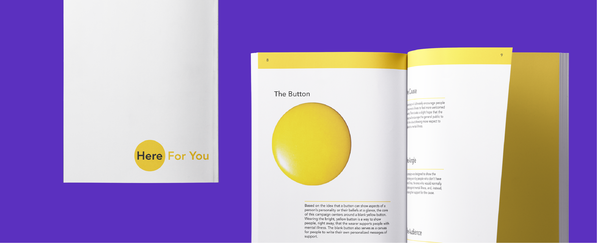
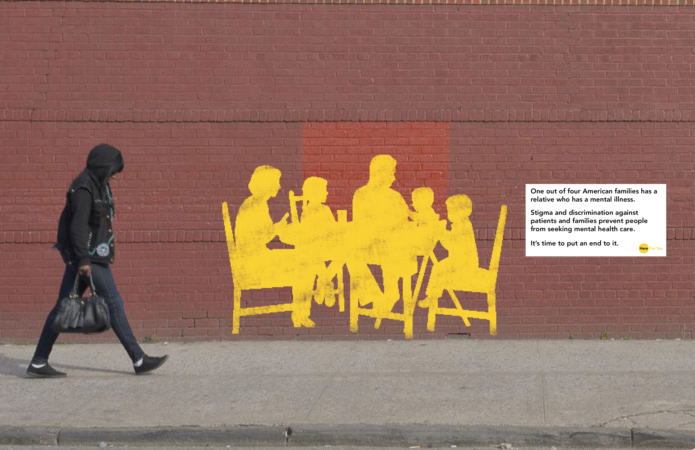
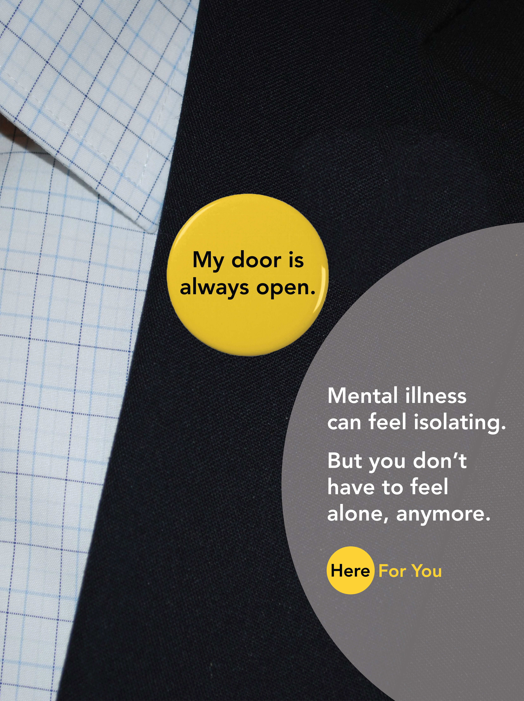
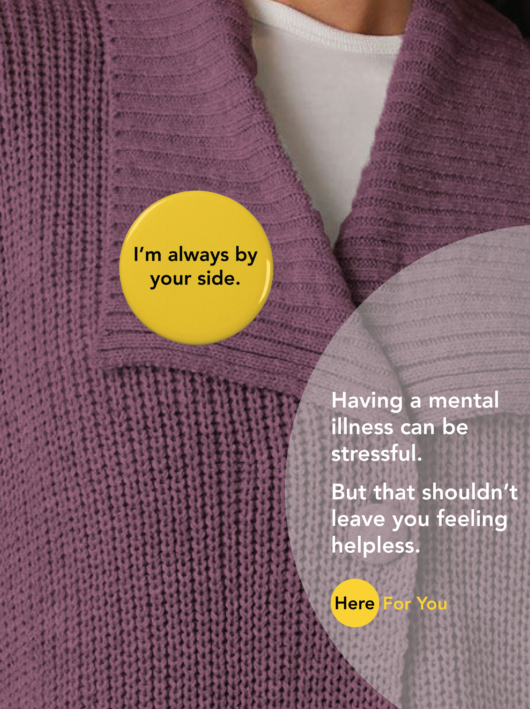
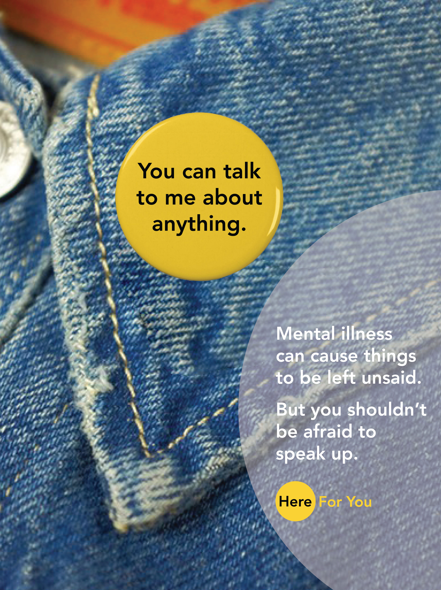
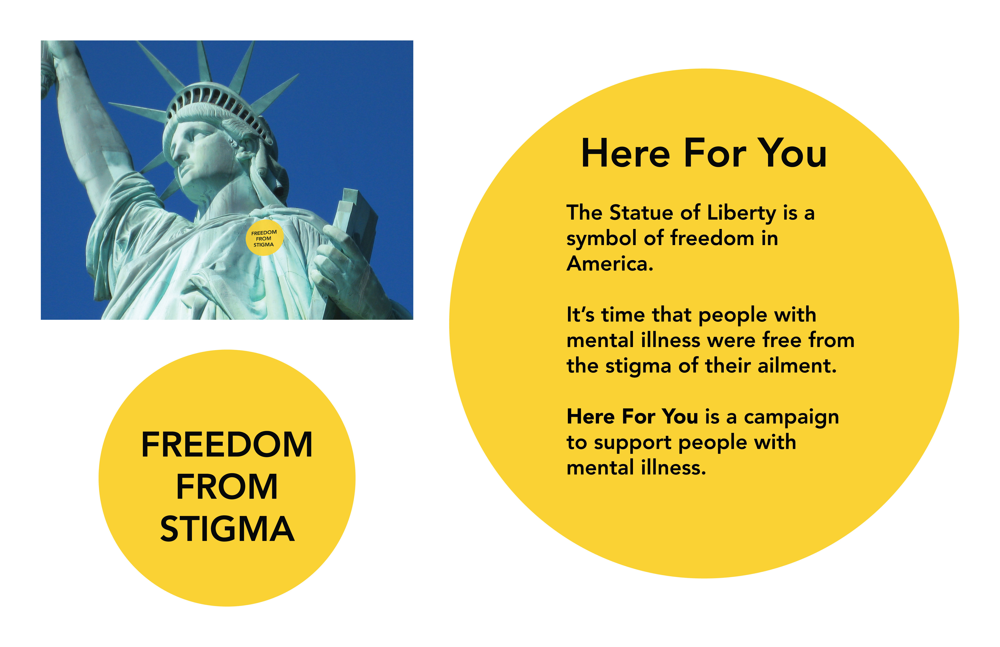
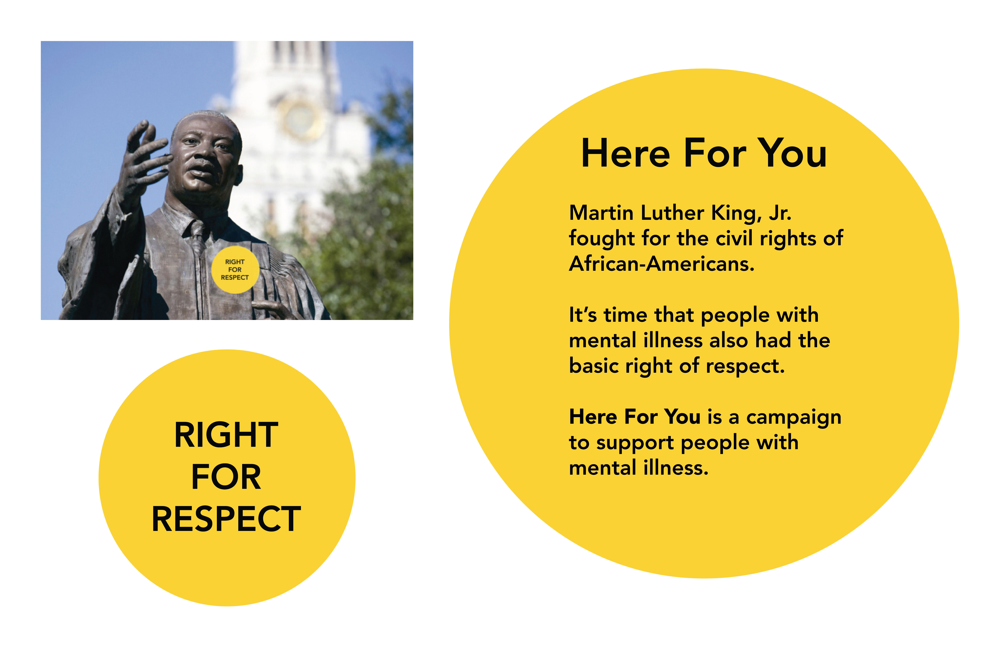
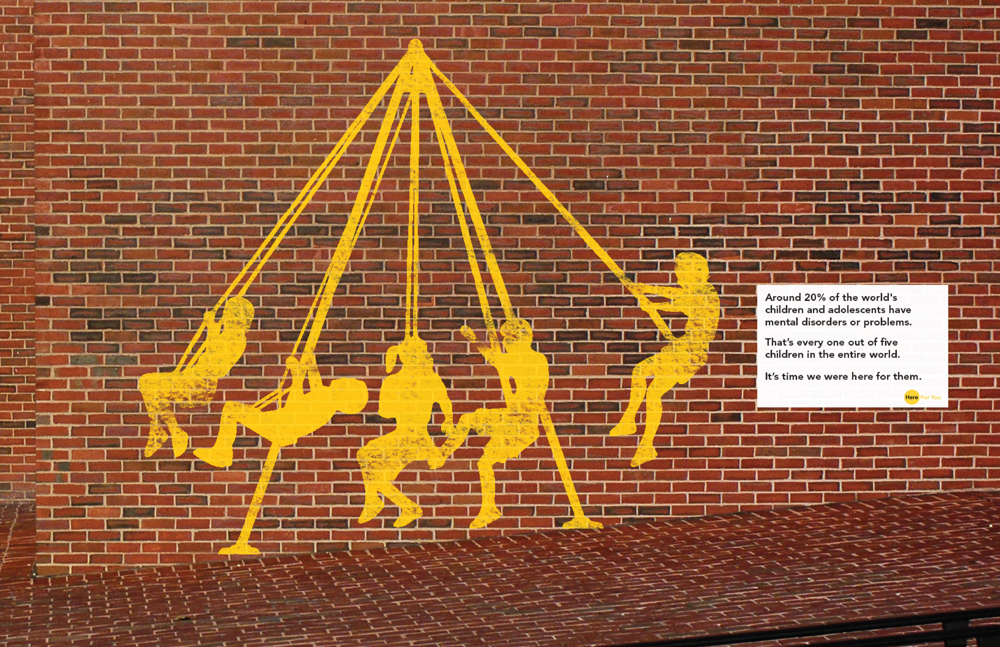
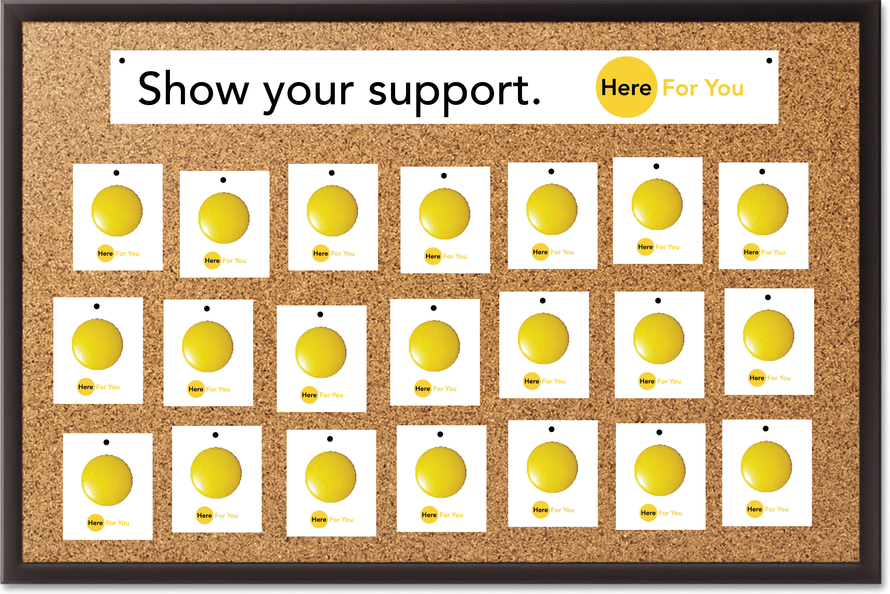

Here For You
The Campaign
The task for this project was to design a campaign to get the word out about a topic of my choosing and to design a 3D series, a 2D series, one extra piece of either kind, and a collateral piece that summed up the entire campaign. At the end of the project period, we were to present our campaigns and explain why we made the design decisions we did.
The topic that I decided to focus on was mental illness, specifically trying to get people who have mental illness to feel like they’re not alone in their fight, while also trying to get others to change how they view mental illness.
The idea of creating a community of people who support others with mental illnesses became the inspiration for each of the parts of my campaign. There needed to be an item or image that would quickly identify these supporters, something bright and easy to place, and that is why I decided to use a blank yellow button as the symbol of the campaign.

2D Series (Solidarity Series)
This series is supposed to feel much more personal for the viewer. Each of the posters shows a person offering support to the viewer, while wearing a button personalized to the overall message of the poster. The imagery is friendly and inviting and directly supportive of certain aspects of mental illness.



3D Series (Activist Series)
This series introduces the button placed upon statues of famous historical figures in American history. A connection is made between the figure’s historical significance and how that should also shape the way we view and support mental illness.
Alongside each statue would also be a large, vinyl button giving the viewer information about the figure, the connection to mental illness, and the campaign’s purpose.



Facts Series
This series contains statistical information about mental illness. Placed alongside the statistic is an image that directly relates to it. The imagery is supposed to feel out of place, grabbing people’s attention and drawing them closer to read the accompanying text.

Support Series
This is the final series to be implemented during the campaign. Once the campaign has made a name for itself, this installation is to be placed in high traffic areas for people to walk past and grab a button of their own. If needed, installations can also be utilized in smaller settings, such as on office bulletin boards.
